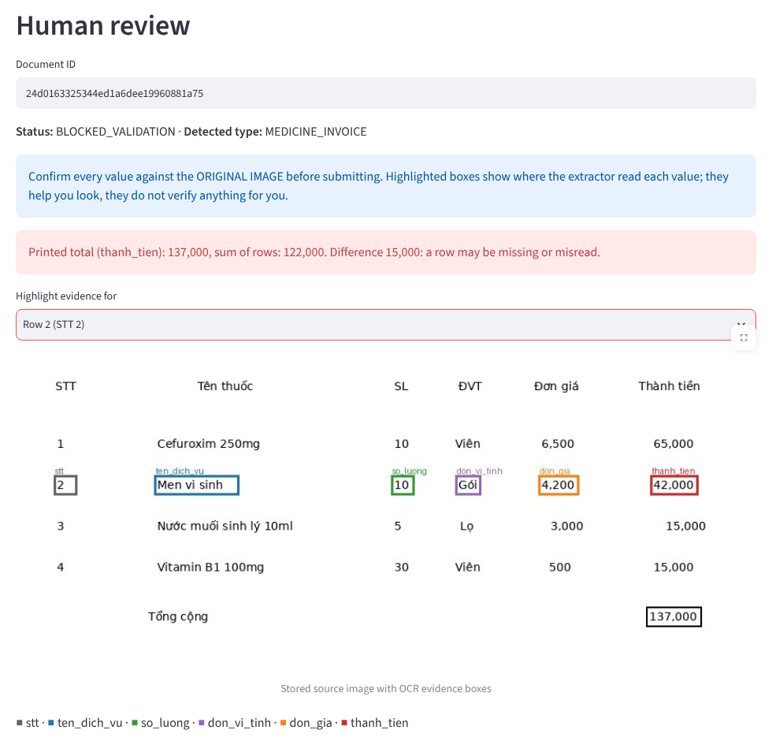
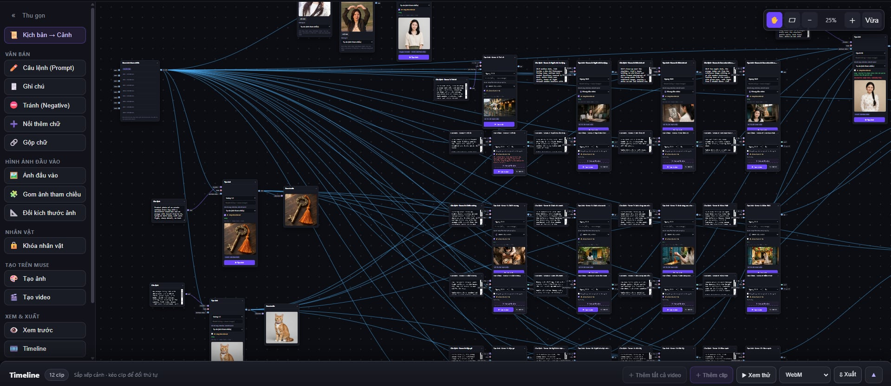
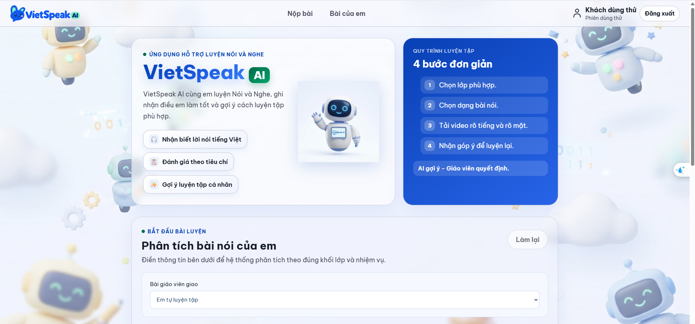
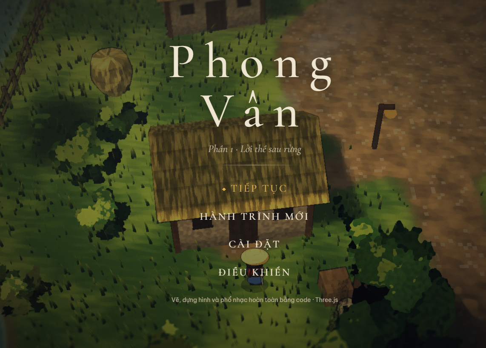

Xem ảnh01 / Document intelligence
InvoiceFlow AI
Biến hóa đơn và biên lai tiếng Việt thành dữ liệu có thể kiểm tra: OCR, đối chiếu bằng chứng, duyệt thủ công trước khi xuất và mô phỏng bàn giao ERP.
Hi, mình là Hiển
AI & Automation Engineer
Engineering meets creative thinking.
Mình xây công cụ AI, tự động hóa quy trình và kể câu chuyện sản phẩm bằng hình ảnh, video & chuyển động.
01 / Selected work
Những dự án mình xây dựng, với giao diện thật và công nghệ phía sau mỗi trải nghiệm.

Xem ảnh01 / Document intelligence
Biến hóa đơn và biên lai tiếng Việt thành dữ liệu có thể kiểm tra: OCR, đối chiếu bằng chứng, duyệt thủ công trước khi xuất và mô phỏng bàn giao ERP.

Xem ảnh02 / Creative tooling
Extension biến quy trình tạo ảnh và video AI thành một canvas trực quan: kết nối node, quản lý cảnh, sắp xếp timeline và xuất video ngay trên trình duyệt.

Xem ảnh03 / Technology for education
Dự án giáo dục phi lợi nhuận hỗ trợ luyện nói và nghe tiếng Việt, đánh giá theo tiêu chí và gợi ý luyện tập. AI hỗ trợ, giáo viên quyết định.
Giải Nhất Sáng tạo Khoa học Kỹ thuật TP. Huế

Xem ảnh04 / Interactive experience
Một thế giới 3D chạy ngay trên trình duyệt. Dựng hình, tương tác và trải nghiệm game được phát triển bằng code, từ ý tưởng đến hành trình khám phá.
02 / AI Creative Studio
Mình kết hợp AI với tư duy hình ảnh, nhịp dựng và motion graphics để tạo nội dung quảng cáo, video giới thiệu sản phẩm và những câu chuyện giàu cảm xúc.
Phát triển concept, hình ảnh chủ đạo và visual phù hợp với câu chuyện, cá tính của sản phẩm.
Concept · Art direction · Product visualsTừ kịch bản và storyboard đến cảnh quay bằng AI, dựng nhịp và hoàn thiện video giới thiệu sản phẩm.
Script · Image to video · EditingChuyển thông điệp thành chuyển động: typography, điểm nhấn tính năng và đồ họa cho quảng cáo.
Typography · Product explainers · Social adsSelected public work
Hai sản phẩm đã được công khai Xem video trên X
Xem video trên X
Product video / HealAI
Video giới thiệu cách hoạt động của thiết bị HealAI, đã được công khai trên kênh của thương hiệu.
Xem bản gốc trên X Xem video trên YouTube
Xem video trên YouTube
Visual storytelling / K.T Audio
Một sản phẩm video âm nhạc, nơi hình ảnh và nhịp điệu cùng dẫn dắt cảm xúc. Đã công khai trên YouTube.
Xem bản gốc trên YouTubeCác dự án chưa được nhãn hàng cho phép công khai được giữ riêng.
Trao đổi dự án03 / Under the hood
Từ xử lý tài liệu đến công cụ sáng tạo, mỗi bài toán có một bộ công cụ phù hợp.
Xử lý dữ liệu, nhận dạng tài liệu và kết nối các bước kiểm tra trong quy trình.
Giao diện ứng dụng, trải nghiệm 3D và công cụ chạy trực tiếp trên trình duyệt.
Workflow trực quan cho tạo ảnh, video AI, dựng timeline và xuất nội dung.
04 / Stay connected
Một ý tưởng AI, một công cụ mới hay một câu chuyện sản phẩm — mình luôn muốn được nghe.
Mã nguồn & những dự án mình xây dựng.
Kết nối công việc & trao đổi dự án.
Chia sẻ & trò chuyện mỗi ngày.
Những khoảnh khắc đời thường.
Kết nối qua dữ liệu & AI.
Các liên kết bên ngoài mở trong tab mới.